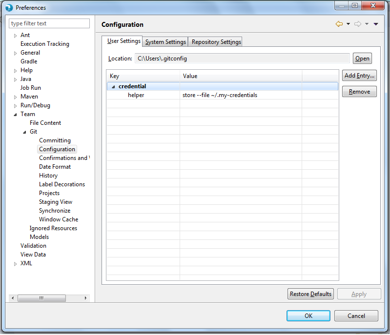
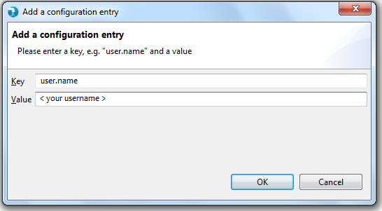
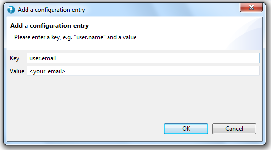

How to work with Git in Hydrograph
Initial setup before we start working with Git in Hydrograph
Set up your username and email address (required for Git operations). Go to Windows > Preferences > Team > Git> Configuration:

Click new entry and provide details as given below:

Click OK and add new entry for email and then click Apply + OK on preferences window.:

For further reference click on the links below: